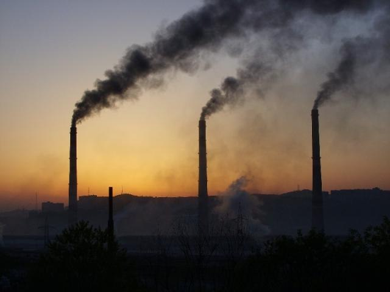

Мониторинг загрязнения атмосферного воздуха осуществляется в семи городах Приморского края (Артем, Владивосток, Дальнегорск, Находка, Партизанск, Спасск-Дальний, Уссурийск) Приморским управлением по гидрометеорологии и мониторингу окружающей среды и ведомственной лабораторией федерального государственного предприятия «Дальневосточный завод «Звезда» в г. Большой Камень.
При этом осуществлялся контроль за содержанием в воздухе взвешенных веществ (пыль), диоксида серы, растворимых сульфатов, оксида углерода, диоксида и оксида азота, аммиака, сероводорода, формальдегида, бенз(а)пирена и тяжелых металлов.
Из обобщенных сведений о состоянии загрязнения воздуха в городах Приморского края следует, что в 2009 году отмечался очень высокий уровень загрязнения воздуха в Уссурийске, высокий уровень загрязнения - во Владивостоке, ориентировочно высокий уровень загрязнения - в Партизанске.
В городах Артем, Большой Камень и Находка уровень загрязнения воздуха оценен как низкий, в городах Дальнегорск и Спасск-Дальний - как ориентировочно низкий.